K-Means Clustering (Linier)#
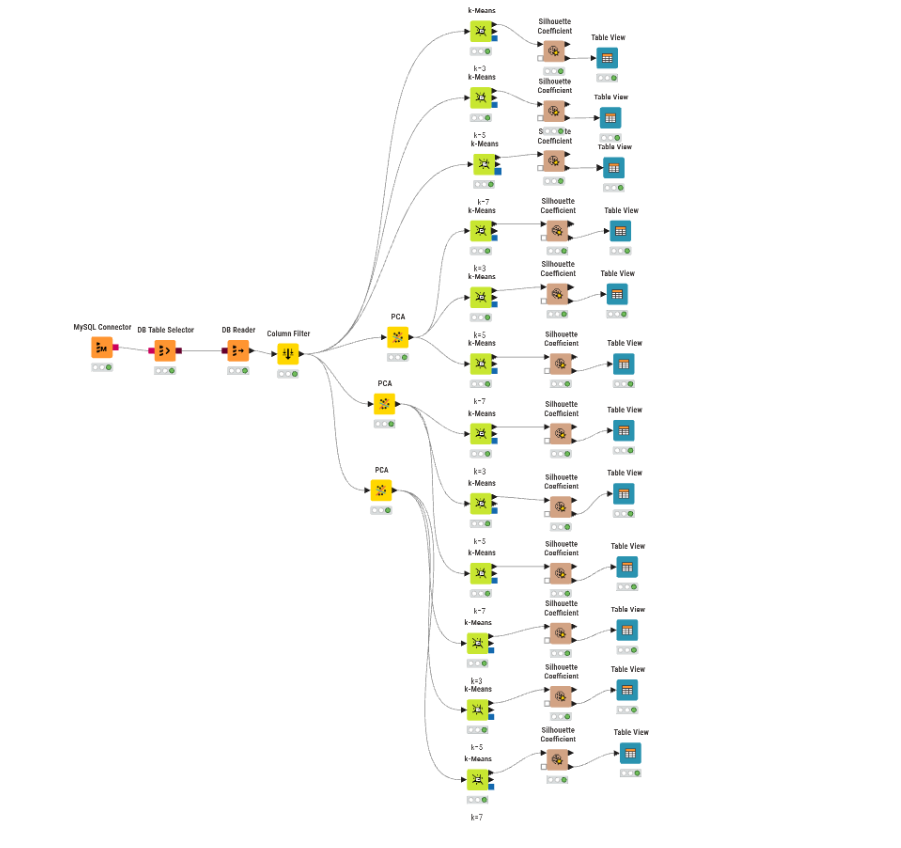
Dokumentasi Workflow (KNIME)#
Workflow di atas merupakan rancangan proses klasterisasi menggunakan algoritma K-Means yang membandingkan empat skenario utama berdasarkan pengolahan data linier: tanpa reduksi dimensi, dan dengan reduksi dimensi (PCA) menjadi 203 fitur, 74 fitur, dan 37 fitur. Masing-masing skenario diuji dengan jumlah klaster (k) sebanyak 3, 5, dan 7.
Berikut adalah penjelasan fungsi untuk setiap node yang digunakan:
MySQL Connector Berfungsi untuk membangun koneksi dari KNIME ke server database MySQL menggunakan kredensial (host, port, database, username, password) yang sesuai.
DB Table Selector Menyeleksi atau memilih tabel spesifik di dalam database MySQL yang berisi data mentah polinomial.
DB Reader Mengeksekusi query dari DB Table Selector dan menarik (import) data mentah tersebut dari database ke dalam memori/environment KNIME agar dapat diproses pada node-node selanjutnya.
Column Filter Menyeleksi fitur-fitur yang akan digunakan dalam pemodelan. Pada workflow ini, digunakan secara spesifik untuk menghilangkan kolom ID karena tidak memiliki nilai analitik untuk proses klasterisasi.
PCA (Principal Component Analysis) Teknik reduksi dimensi yang digunakan untuk menyederhanakan kompleksitas data berdimensi tinggi. Karena penggunaan fitur linier akan melipatgandakan jumlah kolom, PCA sangat krusial untuk mengatasi curse of dimensionality. Pada workflow ini, PCA dijalankan dalam tiga skenario reduksi:
Reduksi ke 203 Fitur
Reduksi ke 74 Fitur
Reduksi ke 37 Fitur
Tujuannya adalah mencari keseimbangan antara efisiensi komputasi dan retensi informasi (variansi) dari data asli.
k-Means Algoritma inti yang bertugas mengelompokkan data. Pada workflow ini, K-Means dijalankan untuk keempat variasi input data (tanpa PCA, PCA 203, PCA 74, PCA 37) dan masing-masing diuji pembentukan k = 3, 5, dan 7 klaster.
Silhouette Coefficient Metrik evaluasi yang digunakan untuk mengukur seberapa baik setiap titik data dikelompokkan ke dalam klasternya sendiri dibandingkan dengan klaster lain.
Table View Node visualisasi yang menampilkan nilai Silhouette Coefficient dalam format tabel interaktif. Berdasarkan gambar, rata-rata Silhouette Coefficient dicatatkan secara langsung di atas node Table View untuk memudahkan observasi.
Hasil Evaluasi per Skenario#
Pada bagian ini, evaluasi pembentukan klaster diukur menggunakan rata-rata Silhouette Coefficient pada masing-masing bereksperimen. Menariknya, hasil yang diperoleh sangat konsisten di setiap variasi PCA maupun tanpa PCA:
1. Tanpa Reduksi Dimensi (PCA)#
A. Klastering 3 Kelas (k = 3)
Silhouette Coefficient: 0.471
Tabel Silhouette Coefficient:

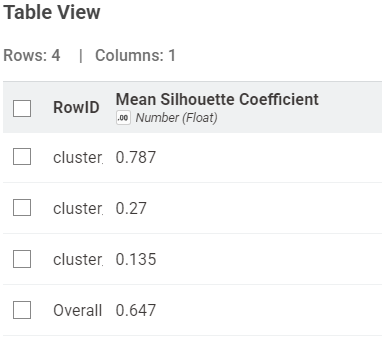
Visualisasi Scatter Plot:

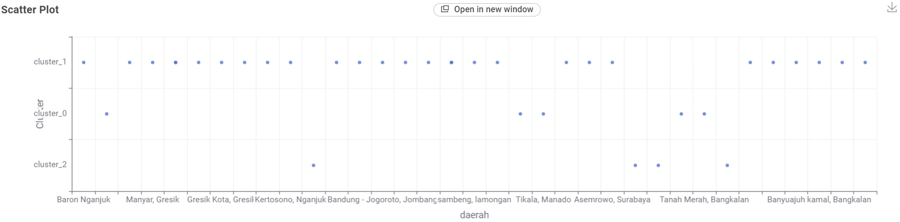
B. Klastering 5 Kelas (k = 5)
Silhouette Coefficient: 0.486
Tabel Silhouette Coefficient:

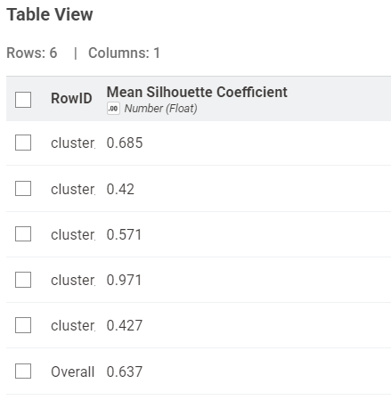
Visualisasi Scatter Plot:

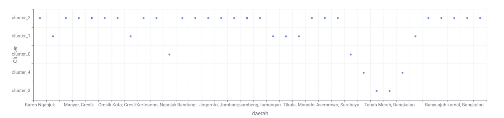
C. Klastering 7 Kelas (k = 7)
Silhouette Coefficient: 0.537
Tabel Silhouette Coefficient:

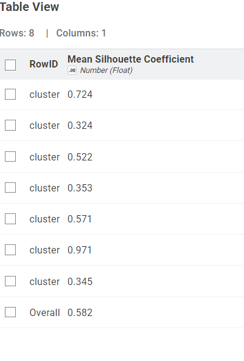
Visualisasi Scatter Plot:

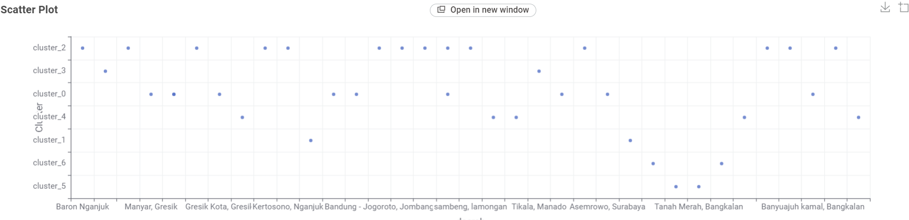
2. Reduksi Dimensi dengan PCA (203 Fitur)#
A. Klastering 3 Kelas (k = 3)
Silhouette Coefficient: 0.471
Tabel Silhouette Coefficient:

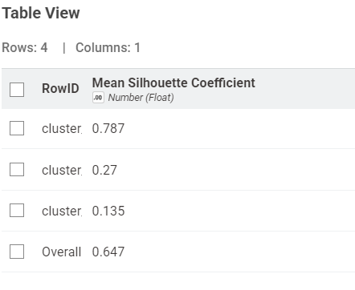
Visualisasi Scatter Plot:

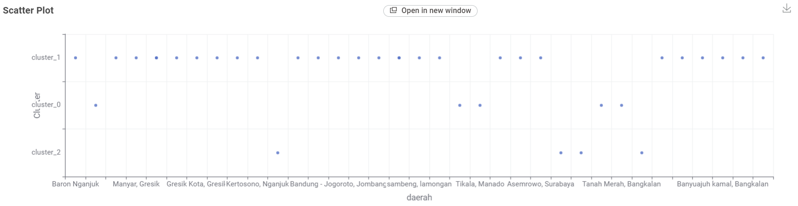
B. Klastering 5 Kelas (k = 5)
Silhouette Coefficient: 0.486
Tabel Silhouette Coefficient:

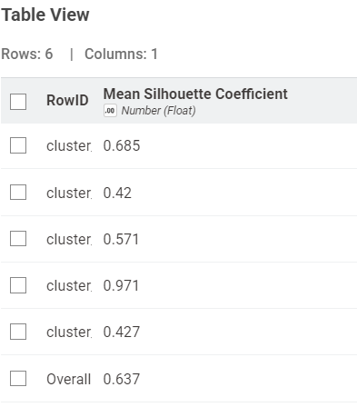
Visualisasi Scatter Plot:

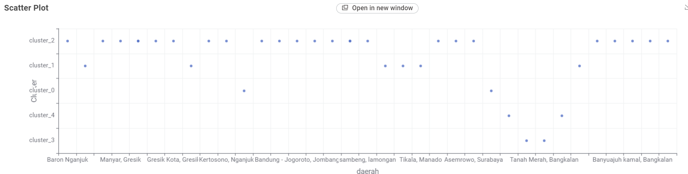
C. Klastering 7 Kelas (k = 7)
Silhouette Coefficient: 0.537
Tabel Silhouette Coefficient:

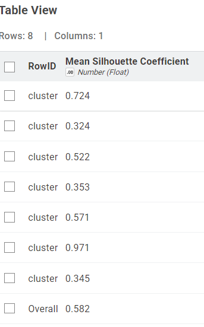
Visualisasi Scatter Plot:

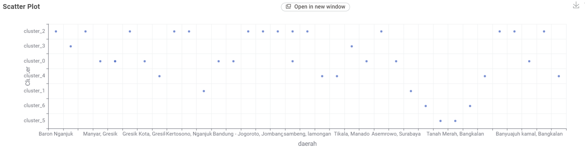
3. Reduksi Dimensi dengan PCA (74 Fitur)#
A. Klastering 3 Kelas (k = 3)
Silhouette Coefficient: 0.471
Tabel Silhouette Coefficient:

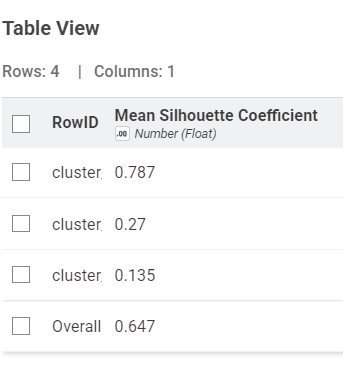
Visualisasi Scatter Plot:

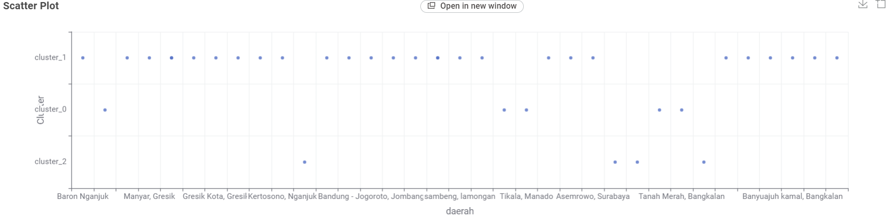
B. Klastering 5 Kelas (k = 5)
Silhouette Coefficient: 0.486
Tabel Silhouette Coefficient:

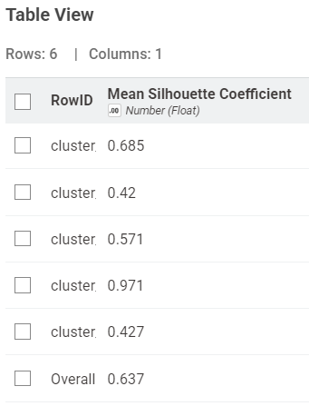
Visualisasi Scatter Plot:

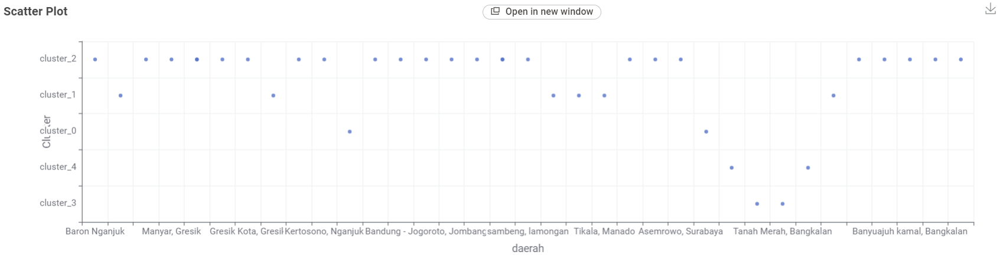
C. Klastering 7 Kelas (k = 7)
Silhouette Coefficient: 0.537
Tabel Silhouette Coefficient:

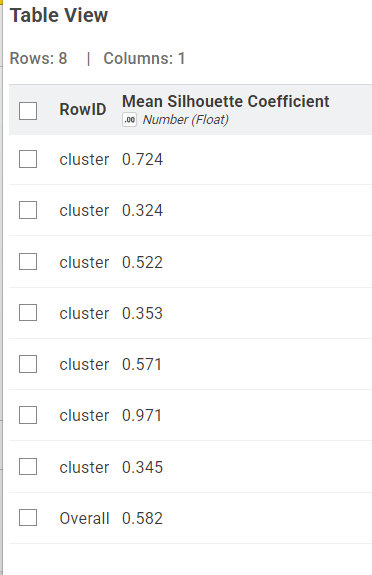
Visualisasi Scatter Plot:

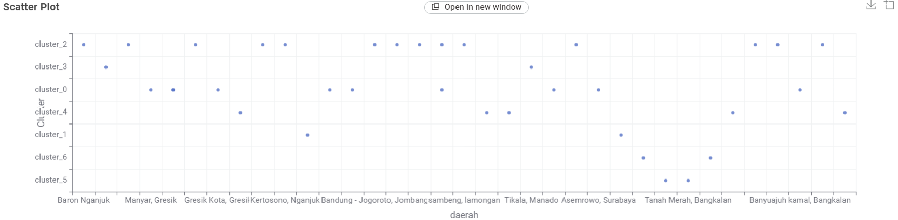
4. Reduksi Dimensi dengan PCA (37 Fitur)#
A. Klastering 3 Kelas (k = 3)
Silhouette Coefficient: 0.471
Tabel Silhouette Coefficient:

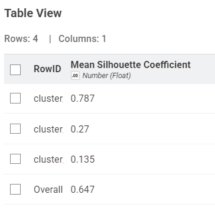
Visualisasi Scatter Plot:

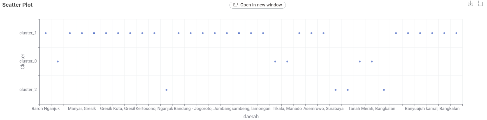
B. Klastering 5 Kelas (k = 5)
Silhouette Coefficient: 0.486
Tabel Silhouette Coefficient:

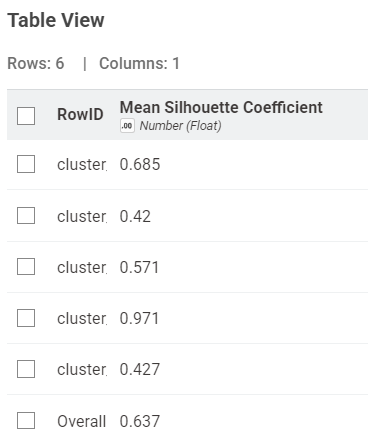
Visualisasi Scatter Plot:

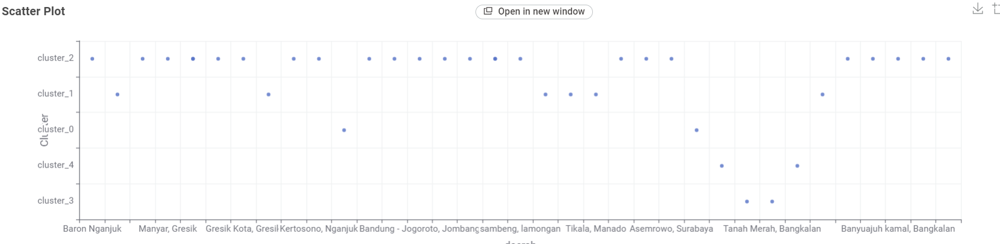
C. Klastering 7 Kelas (k = 7)
Silhouette Coefficient: 0.537
Tabel Silhouette Coefficient:

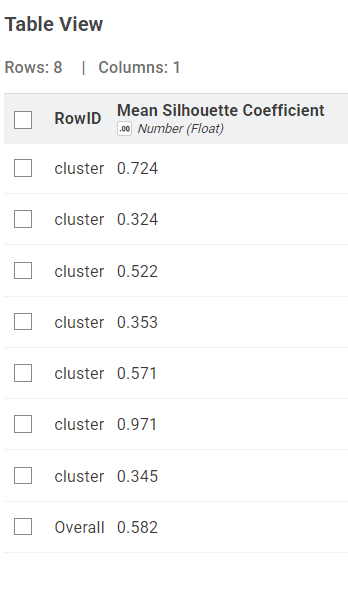
Visualisasi Scatter Plot:

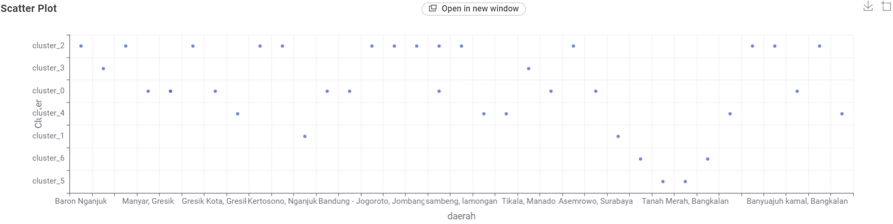
Kesimpulan#
Berdasarkan rancangan eksperimen klasterisasi K-Means dengan data linier di atas, dapat ditarik beberapa kesimpulan utama:
Jumlah Klaster Optimal (\(k=3\)): Pembagian data menjadi 3 klaster secara konsisten memberikan nilai rata-rata Silhouette Coefficient tertinggi yaitu 0.647, mengungguli pembagian 5 klaster (0.637) dan 7 klaster (0.582). Hal ini menandakan bahwa struktur sebaran data pada fitur linier memiliki batas pemisah kelompok yang paling jelas ketika dipartisi menjadi 3 klaster.
Efektivitas PCA yang Ekstrem: Penggunaan PCA untuk mereduksi dimensi (baik ke 203 fitur, 74 fitur, maupun hingga ke 37 fitur) sama sekali tidak mengubah nilai Silhouette Coefficient di setiap pengujian (\(0.647\) untuk \(k=3\), \(0.637\) untuk \(k=5\), dan \(0.582\) untuk \(k=7\)). Nilai yang diperoleh identik dengan penggunaan data linier asli tanpa PCA. Hal ini membuktikan bahwa 37 komponen utama hasil reduksi sudah sangat efektif dalam merepresentasikan seluruh variansi penting dari data linier asli, sehingga resource dan waktu komputasi dapat dihemat secara signifikan tanpa mengorbankan kualitas klasterisasi.
pip install folium
Requirement already satisfied: folium in d:\tugas psd\website-jupyterbook\.venv\lib\site-packages (0.20.0)
Requirement already satisfied: branca>=0.6.0 in d:\tugas psd\website-jupyterbook\.venv\lib\site-packages (from folium) (0.8.2)
Requirement already satisfied: jinja2>=2.9 in d:\tugas psd\website-jupyterbook\.venv\lib\site-packages (from folium) (3.1.6)
Requirement already satisfied: numpy in d:\tugas psd\website-jupyterbook\.venv\lib\site-packages (from folium) (2.5.2)
Requirement already satisfied: requests in d:\tugas psd\website-jupyterbook\.venv\lib\site-packages (from folium) (2.34.2)
Requirement already satisfied: xyzservices in d:\tugas psd\website-jupyterbook\.venv\lib\site-packages (from folium) (2026.9.1)
Requirement already satisfied: MarkupSafe>=2.0 in d:\tugas psd\website-jupyterbook\.venv\lib\site-packages (from jinja2>=2.9->folium) (3.0.3)
Requirement already satisfied: charset_normalizer<4,>=2 in d:\tugas psd\website-jupyterbook\.venv\lib\site-packages (from requests->folium) (3.5.1)
Requirement already satisfied: idna<4,>=2.5 in d:\tugas psd\website-jupyterbook\.venv\lib\site-packages (from requests->folium) (3.19)
Requirement already satisfied: urllib3<3,>=1.26 in d:\tugas psd\website-jupyterbook\.venv\lib\site-packages (from requests->folium) (2.7.0)
Requirement already satisfied: certifi>=2023.5.7 in d:\tugas psd\website-jupyterbook\.venv\lib\site-packages (from requests->folium) (2026.7.22)
Note: you may need to restart the kernel to use updated packages.
[notice] A new release of pip is available: 24.2 -> 26.2.1
[notice] To update, run: python.exe -m pip install --upgrade pip
import pandas as pd
import numpy as np
import folium
from folium.plugins import MiniMap
# =====================================================================
# 1. BACA FILE CSV HASIL EKSPOR DARI NODE k-Means DI KNIME
# =====================================================================
# Gunakan sep=r',csv' dan engine='python' untuk memisah kolom dengan benar
df = pd.read_csv("37-linier.csv", sep=r',csv', engine='python')
# Bersihkan tanda petik ganda (") dan spasi dari nama kolom
df.columns = df.columns.str.replace('"', '').str.strip()
# Bersihkan tanda petik ganda pada isi data kolom 'daerah' dan 'Cluster' jika ada
if 'daerah' in df.columns:
df['daerah'] = df['daerah'].astype(str).str.replace('"', '').str.strip()
if 'Cluster' in df.columns:
df['Cluster'] = df['Cluster'].astype(str).str.replace('"', '').str.strip()
# Standarisasi penamaan label klaster menjadi 'Cluster 0' dan 'Cluster 1'
df["Cluster_Label"] = df["Cluster"].apply(
lambda x: f"Cluster {x.split('_')[-1]}" if "cluster_" in x.lower() else x
)
# =====================================================================
# 2. KAMUS KOORDINAT KECAMATAN/DAERAH SESUAI SCATTER PLOT KNIME
# =====================================================================
# Mencocokkan kata kunci nama daerah di kolom 'daerah' dengan koordinat aslinya
kamus_koordinat = {
"baron": (-7.6033, 112.0601), # Baron, Nganjuk
"nunukan": (4.1357, 117.6531), # Nunukan, Kalimantan Utara
"sreseh": (-7.1983, 113.0805), # Sreseh, Sampang
"manyar": (-7.1192, 112.5975), # Manyar, Gresik
"kamal": (-7.1662, 112.7214), # Kamal, Bangkalan
"kedungpring": (-7.2181, 112.1931), # Kedungpring, Lamongan
"gresik kota": (-7.1566, 112.6555), # Gresik Kota, Gresik
"waru pamekasan": (-6.9634, 113.5350), # Waru, Pamekasan
"paciran": (-6.8767, 112.3414), # Paciran, Lamongan
"kertosono": (-7.5878, 112.1006), # Kertosono, Nganjuk
"jabon": (-7.5419, 112.7686), # Jabon, Sidoarjo
"menganti": (-7.2618, 112.5857), # Menganti, Gresik
"banyu ajuh": (-7.1585, 112.7280), # Banyu Ajuh, Perumnas, Kamal
"bandung jogoroto": (-7.5683, 112.2856), # Bandung - Jogoroto, Jombang
"widang": (-6.9850, 112.1647), # Widang, Tuban
"wonoayu": (-7.4338, 112.6172), # Sidoarjo, Wonoayu
"kwanyar": (-7.1604, 112.8569), # Kwanyar, Bangkalan
"sambeng": (-7.2882, 112.2783), # Sambeng, Lamongan
"kalianget": (-7.0519, 113.9408), # Kec. Kalianget, Sumenep
"cerme": (-7.2281, 112.5583), # Cerme, Gresik
"tikala": (1.4820, 124.8540), # Tikala, Manado
"kerek": (-6.8778, 111.9169), # Kerek, Tuban
"wonokromo": (-7.3006, 112.7383), # Wonokromo, Surabaya
"asem rowo": (-7.2519, 112.7103), # Asemrowo, Surabaya
"kota sumenep": (-7.0086, 113.8617), # Kota Sumenep, Sumenep
"socah": (-7.0983, 112.7289), # Socah, Bangkalan
"pilangkenceng": (-7.4931, 111.6664), # Pilangkenceng, Madiun
"tanah merah": (-7.0931, 112.8286), # Tanah Merah, Bangkalan
"labang": (-7.1294, 112.7936), # Labang, Bangkalan
"widodaren": (-7.3918, 111.2081), # Widodaren, Ngawi
"bangkalan": (-7.0455, 112.7351), # Bangkalan, Bangkalan
"warudoyong": (-6.9298, 106.9161), # Warudoyong, Kota Sukabumi
"banyuajuh": (-7.1620, 112.7310), # Banyuajuh Kamal, Bangkalan
"dukun": (-6.9903, 112.5186), # Dukun, Gresik
"kecamatan bangkalan": (-7.0325, 112.7450) # Kecamatan Bangkalan, Bangkalan
}
def cari_koordinat(nama_daerah, idx):
nama_lower = str(nama_daerah).lower()
for kata_kunci, (lat, lon) in kamus_koordinat.items():
if kata_kunci in nama_lower:
# Tambahkan sedikit pergeseran mikro (jitter) agar daerah di kabupaten yang sama
# tidak saling menumpuk 100% di titik yang sama
np.random.seed(idx * 42)
offset_lat = np.random.uniform(-0.025, 0.025)
offset_lon = np.random.uniform(-0.025, 0.025)
return lat + offset_lat, lon + offset_lon
# Default koordinat di Jawa Timur jika nama belum ada di kamus
return -7.2500 + (idx * 0.02), 112.7500 + (idx * 0.02)
# Jika di tabel sudah ada kolom lat/lon asli, gunakan kolom tersebut; jika belum, cari dari nama 'daerah'
if "latitude" not in df.columns or "longitude" not in df.columns:
coords = [cari_koordinat(row["daerah"], i) for i, row in df.iterrows()]
df["latitude"] = [c[0] for c in coords]
df["longitude"] = [c[1] for c in coords]
# =====================================================================
# 3. MEMBUAT PETA INTERAKTIF FOLIUM (PERSIS SEPERTI DESAIN GAMBAR)
# =====================================================================
def render_peta_knime(df_data, nama_dataset="Linier-37", k_val=2, sil_score=0.822):
m = folium.Map(location=[-7.2, 113.0], zoom_start=7, tiles=None, control_scale=True)
# Layer Pilihan Peta Dasar (Kanan Atas)
folium.TileLayer("OpenStreetMap", name="OpenStreetMap (default)").add_to(m)
folium.TileLayer(
tiles="https://server.arcgisonline.com/ArcGIS/rest/services/World_Street_Map/MapServer/tile/{z}/{y}/{x}",
attr="Esri", name="Esri Street Map"
).add_to(m)
folium.TileLayer(
tiles="https://server.arcgisonline.com/ArcGIS/rest/services/World_Imagery/MapServer/tile/{z}/{y}/{x}",
attr="Esri", name="Citra Satelit (Esri)"
).add_to(m)
palet_warna = {
"Cluster 0": "#e53935", # Merah (33 wilayah)
"Cluster 1": "#1e88e5", # Biru (4 wilayah)
"Cluster 2": "#43a047", # Hijau (jika k=3)
}
unique_clusters = sorted(df_data["Cluster_Label"].unique())
fg_dict = {}
for c_name in unique_clusters:
fg = folium.FeatureGroup(name=c_name, show=True)
fg.add_to(m)
fg_dict[c_name] = fg
# Urutkan agar Cluster 1 di-plot paling akhir (berada di lapisan paling atas & tidak tertutup C0!)
df_sorted = df_data.sort_values(by="Cluster_Label", ascending=True)
for idx, row in df_sorted.iterrows():
c_name = row["Cluster_Label"]
c_num = c_name.split()[-1]
short_code = f"C{c_num}"
color = palet_warna.get(c_name, "#e53935")
z_idx = 1000 if c_name == "Cluster 1" else 100 # Pastikan C1 selalu tampil di depan
icon_html = f"""
<div style="
background-color: {color};
color: white;
border-radius: 50%;
width: 30px;
height: 30px;
display: flex;
align-items: center;
justify-content: center;
font-family: Arial, sans-serif;
font-size: 10px;
font-weight: bold;
border: 2px solid white;
box-shadow: 0 2px 6px rgba(0,0,0,0.45);
">{short_code}</div>
"""
popup_html = f"""
<div style="font-family: Arial; font-size: 12px; min-width: 160px;">
<b>{row['daerah']}</b><hr style="margin: 4px 0;">
<b>Klaster:</b> {c_name} ({short_code})<br>
<b>Koordinat:</b> {row['latitude']:.4f}, {row['longitude']:.4f}
</div>
"""
folium.Marker(
location=[row["latitude"], row["longitude"]],
icon=folium.DivIcon(html=icon_html, icon_size=(30, 30), icon_anchor=(15, 15)),
popup=folium.Popup(popup_html, max_width=250),
tooltip=f"{row['daerah']} ({short_code})",
z_index_offset=z_idx
).add_to(fg_dict[c_name])
# Tambahkan MiniMap & LayerControl
MiniMap(toggle_display=True, position="bottomright").add_to(m)
folium.LayerControl(collapsed=False, position="topright").add_to(m)
# Hitung otomatis jumlah wilayah per klaster (Otomatis tertulis 33 wilayah & 4 wilayah!)
counts = df_data["Cluster_Label"].value_counts()
item_legenda_html = ""
for c_name in unique_clusters:
jml = counts.get(c_name, 0)
color = palet_warna.get(c_name, "#e53935")
item_legenda_html += f"""
<div style="display: flex; align-items: center; margin-bottom: 6px; font-size: 13px; color: #333;">
<span style="display:inline-block; width: 14px; height: 14px; border-radius: 50%; background-color: {color}; margin-right: 10px;"></span>
<span>{c_name} — {jml} wilayah</span>
</div>
"""
legend_card_html = f"""
<div style="
position: fixed;
bottom: 45px;
left: 20px;
z-index: 9999;
background-color: white;
padding: 16px 20px;
border-radius: 12px;
box-shadow: 0 4px 15px rgba(0,0,0,0.18);
font-family: 'Segoe UI', Tahoma, Geneva, Verdana, sans-serif;
min-width: 240px;
">
<div style="font-size: 15px; font-weight: 700; color: #1a1a1a; margin-bottom: 4px;">
Segmentasi Cluster
</div>
<div style="font-size: 12px; color: #777; margin-bottom: 12px;">
Dataset: {nama_dataset} | k={k_val} | Sil={sil_score:.3f}
</div>
{item_legenda_html}
<div style="font-size: 11px; color: #999; margin-top: 10px;">
Klik marker untuk detail
</div>
</div>
"""
m.get_root().html.add_child(folium.Element(legend_card_html))
return m
# Jalankan dan simpan peta
peta_knime = render_peta_knime(df, nama_dataset="PCA-37", k_val=2, sil_score=0.538)
peta_knime.save("peta_segmentasi_33_dan_4_wilayah.html")
peta_knime